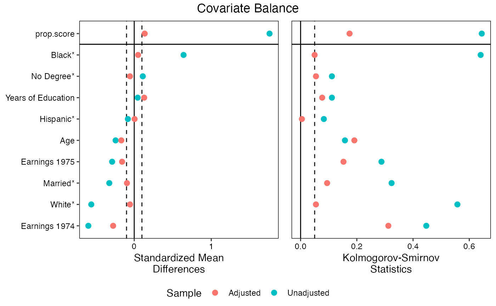
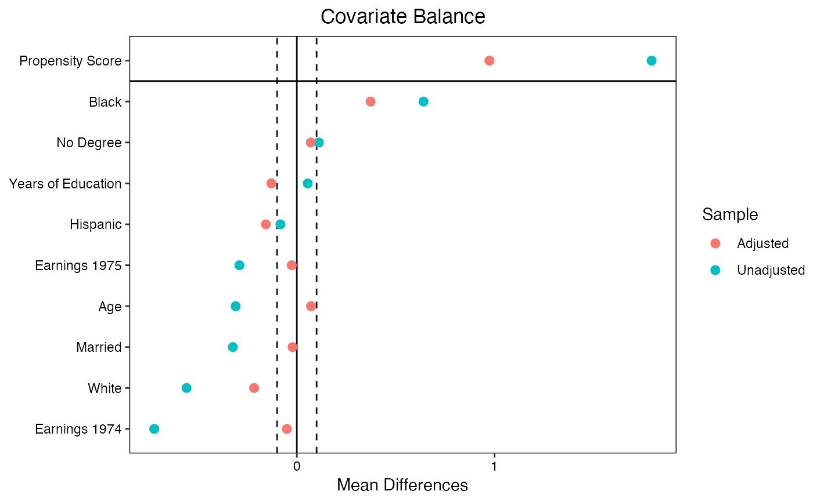
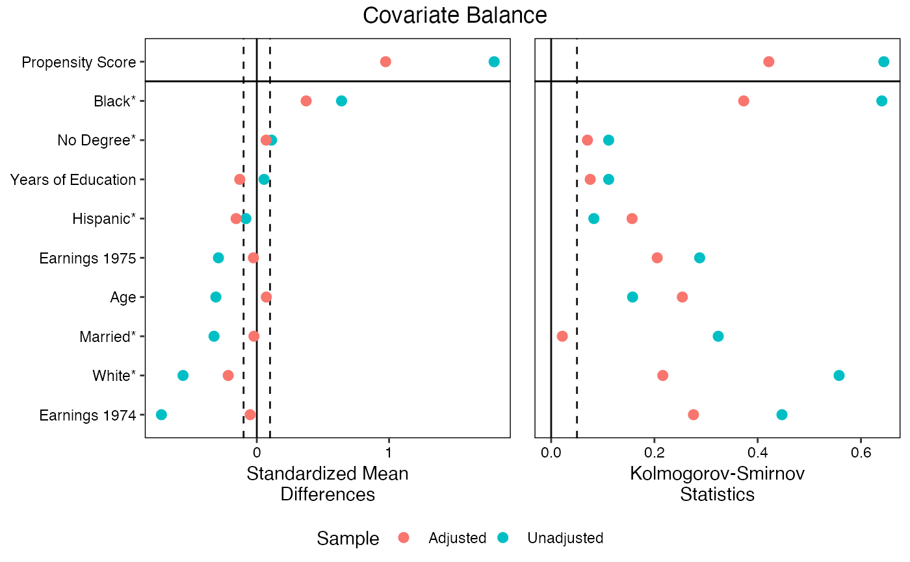
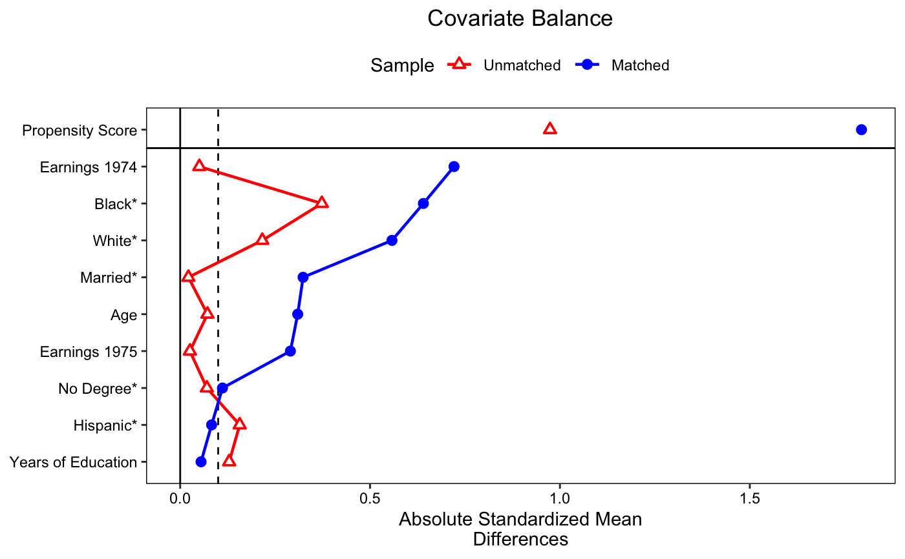

love.plot.RdGenerates a "Love" plot graphically displaying covariate balance before and after adjusting. Options are available for producing publication-ready plots.
love.plot(x, stats, abs, agg.fun = NULL, var.order = NULL, drop.missing = TRUE, drop.distance = FALSE, thresholds = NULL, line = FALSE, stars = "none", grid = FALSE, limits = NULL, colors = NULL, shapes = NULL, alpha = 1, size = 3, wrap = 30, var.names = NULL, title, sample.names, labels = FALSE, position = "right", themes = NULL, ...)
| x | the valid input to a call to |
|---|---|
| stats |
|
| abs |
|
| agg.fun | if balance is to be displayed across clusters or imputations rather than within a single cluster or imputation, which summarizing function ("mean", "max", or "range") of the balance statistics should be used. If "range" is entered, |
| var.order | a |
| drop.missing |
|
| drop.distance |
|
| thresholds |
|
| line |
|
| stars | when mean differences are to be displayed, which variable names should have a star (i.e., an asterisk) next to them. Allowable values are "none", "std" (for variables with mean differences that have been standardized), or "raw" (for variables with mean differences that have not been standardized). If "raw", the x-axis title will be "Standardized Mean Differences". Otherwise, it will be "Mean Differences". Ignored when mean difference are not displayed. See Details for an explanation of the purpose of this option. |
| grid |
|
| limits |
|
| colors | the colors of the points on the plot. See 'Color Specification' at |
| shapes | the shapes of the points on the plot. Must be one or two numbers between 1 and 25 or the name of a valid shape. See the |
| alpha |
|
| size |
|
| wrap |
|
| var.names | an optional object providing alternate names for the variables in the plot, which will otherwise be the variable names as they are stored. This may be useful when variables have ugly names. See Details on how to specify |
| title |
|
| sample.names |
|
| labels |
|
| position | the position of the legend. When |
| themes | an optional list of |
| ... | additional arguments passed to
Additionally, any of the |
love.plot can be used with clusters, imputations, or both in addition to the standard case. The cluster or imputation arguments must be specified in the call to bal.tab. Several types of plots can be requested: a plot aggregating over all imputations across all clusters, a plot displaying individual clusters aggregating over imputations (if any), a plot displaying individual imputations across clusters, or a plot displaying individual clusters within one imputation (if any) or individual imputations for one cluster. The choice of these displays is controlled by the arguments to which.cluster and which.imp. If either of them are .none, the plot will aggregate over that collection. If either are individual values, the plot will display the values for those specific clusters or imputations. If either of them are .all, the plot will display the values for all clusters or imputations. If both clusters and imputations are specified, at least one of which.cluster or which.imp must be a single value, or .none. When aggregating, an argument should be specified to agg.fun referring to whether the mean, minimum ("min"), or maximum ("max") balance statistic or range ("range", the default) of balance statistics for each covariate should be presented in the plot. See the vignette "Appendix 2: Using cobalt with Clustered, Multiply Imputed, and Other Segmented Data" for examples.
With subclasses, balance will be displayed for the unadjusted sample and the aggregated subclassified sample. If disp.subclass is TRUE, each subclass will be displayed additionally as a number on the plot.
Variable order using var.order
The order that the variables are presented in depends on the argument to var.order. If NULL, the default, they will be displayed in the same order as in the call to bal.tab, which is the order of the underlying data set. If "alphabetical", they will be displayed in alphabetical order. If "unadjusted", they will be ordered by the balance statistic of the unadjusted sample. To order by the values of the adjusted sample, "adjusted" can be supplied if only one set of weights (or subclasses) are specified; otherwise, the name of the set of weights should be specified.
If multiple stats are requested, the order will be determined by the first entry to stats (e.g., if both "mean.diffs" and "ks.statistics" are requested, and var.order = "unadjusted", the variables will be displayed in order of the unadjusted mean differences for both plots). If multiple plots are produced simultaneously (i.e., for individual clusters or imputations), var.order can only be NULL or "alphabetical".
If a love.plot object is supplied, the plot being drawn will use the variable order in the supplied love.plot object. This can be useful when making more than one plot and the variable order should be the same across plots.
Variable names using var.names
The default in love.plot is to present variables as they are named in the output of the call to bal.tab, so it is important to know this output before specifying alternate variable names when using var.names, as the displayed variable names may differ from those in the original data.
There are several ways to specify alternate names for presentation in the displayed plot using the var.names argument by specifying a list of old and new variable names, pairing the old name with the new name. You can do this in three ways: 1) use a vector or list of new variable names, with the names of the values the old variable names; 2) use a data frame with exactly one column containing the new variable names and the row names containing the old variable names; or 3) use a data frame with two columns, the first (or the one named "old") containing the old variable names and the second (or the one named "new") containing the new variable names. If a variable in the output from bal.tab is not provided in the list of old variable names, love.plot will use the original old variable name.
love.plot can replace old variables names with new ones based on exact matching for the name strings or matching using the variable name components. For example, if a factor variable "X" with levels "a", "b", and "c" is displayed with love.plot, the variables "X_a", "X_b", and "X_c" will be displayed. You can enter replacement names for all three variables individually with var.names, or you can simply specify a replacement name for "X", and "X" will be replaced by the given name in all instances it appears, including not just factor expansions, but also polynomials and interactions in int = TRUE in the original bal.tab call. In an interaction with another variable, say "Y", there are several ways to replace the name of the interaction term "X_a * Y". If the entire string ("X_a * Y") is included in var.names, the entire string will be replaced. If "X_a" is included in var.name, only it will be replaced (and it will be replaced everywhere else it appears). If "X" is included in var.name, only it will be replaced (and it will be replaced everywhere else it appears). See example at var.names.
Stars and the x-axis label with mean differences
When mean differences are to be displayed, love.plot() attempts to figure out the appropriate label for the x-axis. If all mean differences are standardized, the x-axis label will be "Standardized Mean Differences". If all mean differences are raw (i.e., unstandardized), the x-axis label will be "Mean Differences". Otherwise, love.plot() turns to the stars argument. If "raw", the x-axis label will be "Standardized Mean Differences" (i.e., because un-starred variables have standardized mean differences displayed). If "std", the x-axis label will be "Mean Differences" (i.e., because un-starred variables have raw mean differences displayed). If "none", the x-axis label will be "Mean Differences" and a warning will be issued recommending the use of stars.
The default is to display standardized mean differences for continuous variables, raw mean differences for binary variables, and no stars, so this warning will be issued in most default uses of love.plot(). The purpose of this is to correct behavior of previous versions of cobalt in which the default x-axis label was "Mean Differences", even when standardized mean differences were displayed, yielding a potentially misleading plot. This warning requires the user to think about what values are being displayed. The idea of using stars is that the user can, in a caption for the plot, explain that variables with an asterisk have standardized (or raw) mean differences display, in contrast to un-starred variables.
When only one type of balance statistic is requested, the returned object is a standard ggplot object that can be manipulated using ggplot2 syntax. This facilitates changing fonts, background colors, and features of the legend outside of what love.plot provides automatically.
When more than one type of balance statistic is requested, the plot is constructed using arrangeGrob in gridExtra, which arranges multiple plots and their shared legend into one plot. Because the output of arrangeGrob is a gtable object, its features cannot be manipulated in the standard way. Use the themes argument to change theme elements of the component plots. The original plots are stored in the "plots" attribute of the output object.
love.plot can also be called by using plot or autoplot on a bal.tab object. If used in this way, some messages may appear twice. It is recommended that you just use love.plot instead.
Noah Greifer
library(MatchIt); data("lalonde", package = "cobalt") ## Nearest Neighbor matching m.out1 <- matchit(treat ~ age + educ + race + married + nodegree + re74 + re75, data = lalonde) love.plot(m.out1, thresholds = c(m = .1), var.order = "unadjusted")#> Warning: Standardized mean differences and raw mean differences are present in the same plot. #> Use the 'stars' argument to distinguish between them and appropriately label the x-axis.## Using alternate variable names v <- data.frame(old = c("age", "educ", "race_black", "race_hispan", "race_white", "married", "nodegree", "re74", "re75", "distance"), new = c("Age", "Years of Education", "Black", "Hispanic", "White", "Married", "No Degree", "Earnings 1974", "Earnings 1975", "Propensity Score")) love.plot(m.out1, stats = "m", threshold = .1, var.order = "unadjusted", var.names = v)#> Warning: Standardized mean differences and raw mean differences are present in the same plot. #> Use the 'stars' argument to distinguish between them and appropriately label the x-axis.#Using multiple stats love.plot(m.out1, stats = c("m", "ks"), thresholds = c(m = .1, ks = .05), var.order = "unadjusted", var.names = v, stars = "raw", position = "bottom", wrap = 20)#Changing visual elements love.plot(m.out1, thresholds = c(m = .1), var.order = "unadjusted", var.names = v, abs = TRUE, shapes = c("triangle filled", "circle"), colors = c("red", "blue"), line = TRUE, grid = FALSE, sample.names = c("Unmatched", "Matched"), stars = "raw", position = "top")